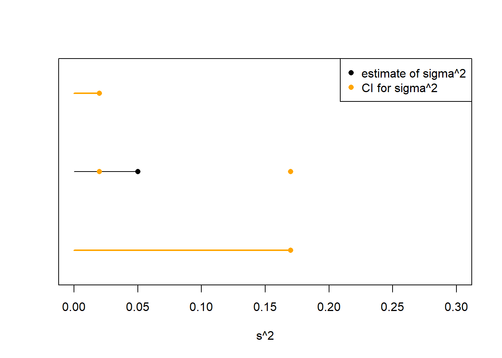
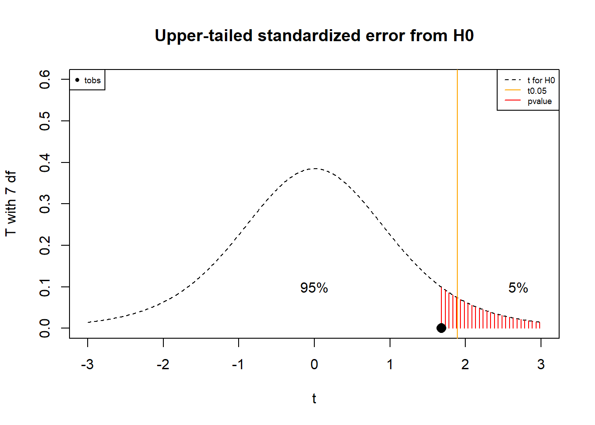
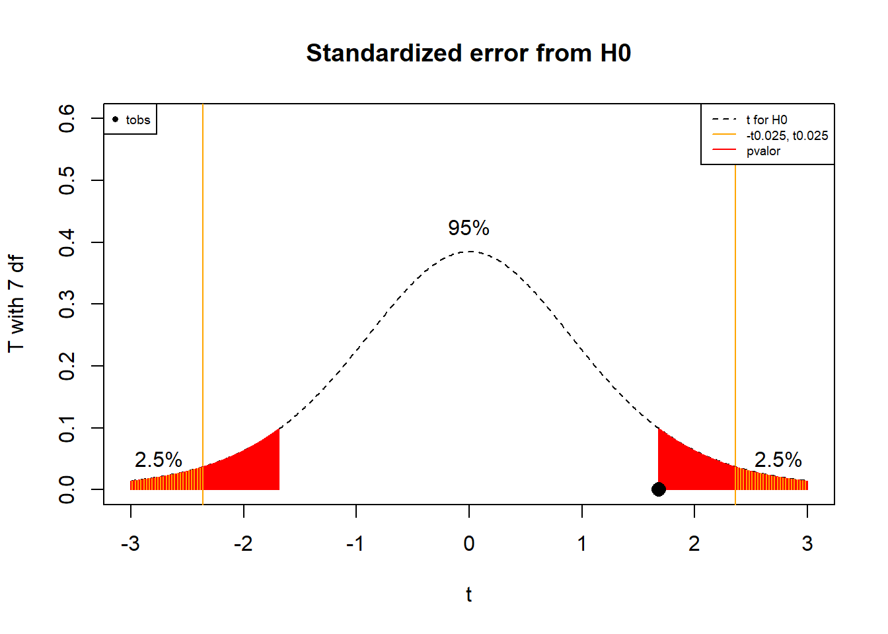

Chapter 14 Contraste de hipótesis
14.1 Objetivo
En este capítulo estudiaremos pruebas de hipótesis de medias y proporciones. Definiremos cuál es la hipótesis nula y la alternativa y cómo utilizar los datos para elegir entre ambas.
También presentaremos la prueba de hipótesis de varianzas y los errores que se cometen cuando se prueba una hipótesis. Estos errores se conocen como falsos positivos y falsos negativos.
14.2 Hipótesis
Cuando llevamos a cabo experimentos aleatorios, a menudo queremos probar si los cambios que realizamos sobre el experimento tienen un efecto real. Queremos, por ejemplo, saber si hemos podido influenciar el experimento. O, sihemos sometido el experimento bajo una nueva condición, queremos saber si esa condición affecta el desarrollo del experimento. Usualmente tenemos una idea de cómo deberían ser los datos cuando estos cambios no están presente. Dado que los resultatos del experimento son aleatorios con y sin el cambio ¿cómo podemos diferenciar entre aplicar el cambio o no?
La estrategia es formular el cambio o la nueva condición en términos de los valores que pueden tomar los parámetros de las distribuciones de probabilidad asociadas al experimento aleatorio. Después, usamos las observaciones del experimento aleatorio bajo la nueva condición para propocionar evidencia sobre la posible influencia en los parámetros.
Ejemplos (Neumáticos)
Los fabricantes de neumáticos quieren saber si la vida media de los neumáticos que producen es de al menos 20000 km. Intentemos traducir su interés en términos estadísticos. Imaginemos un experimento alatorio que consiste en medir cuanto dura la vida útil de un neumático en particular. Por lo tanto a los fabricantes les interesa saber si la media de la vida útil de un neumático es de al menos 20000 km.
Formulemos dos declaraciones dicotómicas, es decir dos situaciones excluyentes:
- La vida media de los neumáticos puede ser menos de 20 000 km
- La vida media de los neumáticos puede ser superior a 20000 km
Esto significa que sólo una puede ser verdadera. La pregunta es entonces cómo podemos usar los datos para decidir entre la situación a. o situación b. Consideremos que \(\mu\) es la media de la distribución de la población. Por lo tanto, las afirmaciones a. y B. también se puede escribir como
- \(H_0: \mu \leq 20000km\)
- \(H_1: \mu > 20000km\)
Donde la declaración \(H_0\) es para la cual los autos no recorren los 20000 km deseados mientras que la declaración \(H_1\) es el caso deseado. \(H_0\) y \(H_1\) se llaman hipótesis.
Definición
En estadística, una afirmación (conjetura) sobre la distribución de una variable aleatoria se denomina hipótesis.
Las hipótesis generalmente se escriben en dos declaraciones dicotómicas.
La hipótesis nula: \(H_0\) cuando la conjetura es falsa generalmente se refiere al statu quo. Los datos pueden ser explicados por el satus quo.
La hipótesis alternativa: \(H_1\) cuando la conjetura es verdadera generalmente se refiere a la hipótesis de investigación. Los datos pueden ser explicados por la alternativa deseada.
Ejemplo (Fertilizante)
Los desarrolladores de fertilizantes quieren probar si su nuevo producto tiene un efecto real en el crecimiento de las plantas. ¿Cuáles son la hipótesis nula y la alternativa?
Siendo \(\mu_0\) el crecimiento medio de las plantas sin fertilizante (conocido) y \(\mu\) el crecimiento medio de las plantas con el fertilizante (desconocido)
- \(H_0:\mu \leq \mu_0\) (El fertilizante puede que no haga nada: status quo)
- \(H_1:\mu > \mu_0\) (El fertilizante puede tener el efecto deseado: interés de investigación)
Ejemplo (quimioterapia)
Las farmacéuticas necesitan saber si una nueva quimioterapia puede curar al 90% de los pacientes con cáncer. Siendo \(p_0\) la proporción de pacientes que se curan sin la quimioterapia (conocido) y \(p\) la proporción que se curan con la quimioterapia (desconocido) podemos formular las hipótesis
- \(H_0:p \leq p_0\) (La quimioterapia puede que no cambie la proporción de curados: status quo)
- \(H_1: p > p_0\) (La quimioterapia puede tener el efecto deseado: interés de investigación)
Ten en cuenta que nuestro nuevo experimento mejorado tiene el parámetro \(p\) y queremos saber cómo se compara con el experimento sin ningúna mejora que tiene el parámetro \(p_0\).
Queremos decidir entre \(H_0\) y \(H_1\). Hay dos opciones:
Rechazamos la hipótesis alternativa \(H_1\); es decir, aceptamos la hipótesis nula \(H_0\).
Aceptamos la hipótesis alternativa \(H_1\) (nuestro interés); es decir, rechazamos la hipótesis nula \(H_0\).
14.3 Contraste de hipótesis
Resumamos los diferentes casos, formas y tipos de las pruebas de hipótesis. Después discutiremos cada caso con un ejemplo particular.
Las hipótesis se pueden probar o decidir utilizando intervalos de confianza. Por lo tanto, vamos a probar hipótesis en los cuatro casos que vimos para los intervalos de confianza, a saber:
Caso 1: Prueba de hipótesis para la media \(\mu\), cuando \(X \rightarrow N(\mu, \sigma^2)\) y sabemos \(\sigma\)
Caso 2: Prueba de hipótesis para la media \(\mu\), cuando \(X \rightarrow N(\mu, \sigma^2)\) y no sabemos \(\sigma\)
Caso 3: Prueba de hipótesis para la proporción \(p\) cuando \(X \rightarrow Bernoulli(p)\) y tanto \(np\) como \(n(1-p)\) \(> 5\).
Caso 4: Prueba de hipótesis para la varianza \(\sigma^2\), cuando \(X \rightarrow N(\mu, \sigma^2)\)
Hay tres maneras de probar las hipótesis:
- Por medio de intervalos de confianza
- usando una zona de rechazo
- Con un \(pvalor\).
Las tres opciones son equivalentes. Finalmente, hay tres tipos de hipótesis que podemos probar:
- de dos colas
- de cola superior
- de cola inferior
14.4 Caso 1 (para la media con varianza conocida)
Un contraste de hipótesis de cola de dos colas es de la forma
- \(H_0:\mu = \mu_0\) (status quo)
- \(H_1:\mu \neq \mu_0\) (interés de investigación)
Este contraste se llama de dos colas porque la hipótesis alternativa \(H_1\) requiere que la media \(\mu\) sea menor o mayor que \(\mu_0\). Esta hipótesis se puede probar en diferentes casos. El caso 1 es cuando
- \(X\) es una variable normal, y
- conocemos el valor de \(\sigma^2\)
14.4.1 Prueba de hipótesis con un intervalo de confianza
Para el caso 1 el intervalo de confianza en \(95\%\) es
\[(l,u)=(\bar{x}-z_{0.025} \frac{\sigma}{\sqrt{n}}, \bar{x}+z_{0.025} \frac{\sigma}{ \sqrt{n}})\]
Criterios de decisión:
- Si el intervalo de confianza contiene la hipótesis nula
\[\mu_0\in (l,u)\] entonces aceptamos \(H_0\) con una confianza de \(95\%\).
- Si el intervalo de confianza no contiene la hipótesis nula\[\mu_0\notin (l,u)\] entonces rechazamos \(H_0\) con \(95\%\) de confianza.
Ejemplo (Cables)
Compramos \(8\) cables a una empresa fabricante que afirma que se rompen con media de \(\mu_0=13\) Toneladas. No estamos seguros y tal vez queramos decidir si los cables se rompen en promedio a \(13\) Toneladas o no. Formulamos el contraste de hipótesis
- \(H_0:\mu = 13\) (Los cables pueden romperse como afirma el fabricante: status quo)
- \(H_1:\mu \neq 13\) (Los cables pueden no romperse como afirma el fabricante: interés de investigación)
Como no sabemos qué es cierto, empecemos por suponer que el fabricante tiene razón y que los cables realmente satisfacen la hipótesis nula y, por lo tanto,
- \(X \rightarrow N(\mu=13, \sigma^2=0.35^2)\)
- Sabemos \(\sigma^2=0.35^2\)
Para decidir entre \(H_0\) o \(H_1\), realizamos una muestra de \(8\) experimentos aleatorios: Cargamos un cable hasta que se rompe y registramos la carga de rotura. Estos son los resultados.
## [1] 13.34642 13.32620 13.01459 13.10811 12.96999 13.55309 13.75557 12.62747El intervalo de confianza si el fabricante tiene razón, es decir, si la hipótesis nula es verdadera, es
\[(l,u)=(\bar{x}-z_{0.025} \frac{\sigma}{\sqrt{n}}, \bar{x}+z_{0.025} \frac{\sigma}{ \sqrt{n}})= (12.97,13.45)\] El intervalo de confianza nos dice que podmeos tener un \(95\%\) de confianza en que la media de la carga de rotura \(\mu\) de los cables que promabos está en el intervalo. No sabemos el valor real de \(\mu\) pero vemos un valor podría ser \(\mu=13\) Toneladas, ya que el intervalo atrapó \(\mu_0\)
\[\mu_0\in (12.97,13.45)\]
Nuestra conclusión es aceptar que \(H_0\) podría haber producido nuestro intervalo observado. También decimos que los datos respaldan la afirmación del fabricante. Más técnicamente, decimos que no rechazamos la hipótesis nula \(H_0\).

14.4.2 Prueba de hipótesis con zonas de aceptación/rechazo
Una forma equivalente de probar la hipótesis es ver si nuestro conjunto de observaciones es raro o común si la hipótesis nula fuera verdadera. Recordemos el contraste de hipótesis
- \(H_0:\mu = \mu_0\) (status quo)
- \(H_1:\mu \neq \mu_0\) (interés de investigación)
Para probar la hipótesis con una zona de rechazo calculamos la estadística estandarizada
\[Z=\frac{\bar{X}-\mu_0}{\frac{\sigma^2}{\sqrt{n}}}\] Cuando la hipótesis nula es verdadera. Ten en cuenta que estamos estandarizando con \(\mu_0\) (la hipótesis nula). Este es el error estandarizado que cometemos al estimar \(\mu_0\) con \(\bar{X}\). Luego vemos si el valor observado de \(Z\) está dentro del intervalo
\[(-z_{0.025}, z_{0.025})\] Recuerda que este intervalo define los valores más comunes de \(Z\) ya que \(P(-z_{0.025} \leq Z \leq z_{0.025})=0.95\).
El intervalo \((-z_{0.025}, z_{0.025})\) se denomina intervalo de aceptación de \(H_0\) con un nivel de confianza de \(95\%\).

Criterios de decisión:
- Si la estadística observada \(z_{obs}\) bajo la hipótesis nula está en la región de aceptación
\[z_{obs} \in (-z_{0.025}, z_{0.025})\]
entonces aceptamos \(H_0\) con una confianza de \(95\%\).
- Si la estadística observada \(z_{obs}\) bajo la hipótesis nula no está en la región de aceptación
\[z_{obs} \notin (-z_{0.025}, z_{0.025})\] entonces rechazamos \(H_0\) con una confianza de \(95\%\).
La región \((-z_{0.025}] \cup[z_{0.025})\) se denomina zona de rechazo.
Este criterio de decición nos dice que tan común es nuestra muestra aleatoria si la hipótesis nula es verdad.
Ejemplo (Cables)
Si \(H_0\) es verdadera entonces \(\bar{X}\) es el estimador de \(\mu_0\) y la estadística estandarizada
\[Z=\frac{\bar{X}-13}{\frac{0.35}{\sqrt{8}}} \rightarrow N(0,1)\] es el error en estimación de \(\mu_0\) que cometemos cuando realizamos la estimación. Debido a que estamos en caso 1, \(Z\) es estándar normal.
Para nuestros datos, el error observado estandarizado está en la región de aceptación
\[z_{obs}=\frac{\bar{x}-13}{\frac{0.35}{\sqrt{8}}}=1.7187 \in (-z_{0.025}, z_{0.025})\] Concluimos que nuestro error observado es típico al \(95\%\) cuando la hipótesis nula \(\mu_0\) es verdadera. Por lo tanto, nuevamente aceptamos que los datos son consistentes con la afirmación del fabricante. También decimos que no rechazamos \(H_0\).

14.4.3 Prueba de hipótesis con un P valor
También podemos contrastar la hipótesis de dos colas calculando la probabilidad de que el promedio de una nueva muestra aleatoria sea aún más raro que el promedio que acabamos de observar. Debido a que estamos en el **caso 1*, sabemos que la estadística estandarizada \(Z\) es una variable normal estándar, entonces definimos el \(pvalor\) como
\[pvalor = P(Z \leq -z_{obs}) + P(z_{obs} \leq Z) = 2 (1-\phi(|z_{obs}|))\]
Esa es la probabilidad de que cuando tomamos otra muestra del mismo tamaño podamos obtener una observación aún más extrema. Si nuestra observación ya es rara, entonces este valor será pequeño.
Criterios de decisión:
- Si el \(pvalor\) observado es
\[pvalor \geq \alpha =1-0.95=0.05\]
entonces aceptamos \(H_0\) con una confianza de \(95\%\).
- Si el \(pvalor\) observado es
\[pvalor < \alpha =1-0.95=0.05\] entonces rechazamos \(H_0\) con una confianza de \(95\%\).
\(\alpha\) es el nivel de significancia. Nos dice cuánto de la distribución estamos omitiendo y define la región que consideramos como observaciones raras.
Recuerda: siempre confiamos en nuestros datos. Si la hipótesis nula dice que nuestros datos son una observación rara entonces desconfiamos de la hipótesis nula y la rechazamos.

Ejemplo (Cables)
Para nuestros datos, la estadística observada \(z_{obs}=1.718714\) y su P valor es entonces
\[pvalor=2 (1-\phi(1.718714))=0.08567\]
R: 2*(1-pnorm(1.718714))
Concluimos que si realizamos una nueva muestra es probable que podamos obtener un resultado más extremo que el que obtuvimos. La hipótesis nula puede tolerar el error observado con una confianza de \(95\%\). Por lo tanto, aceptamos que \(H_0\) podría haber producido nuestros datos y decimos nuevamente que es consistente con la afirmación del fabricante.
En R todo el contraste de hipótesis se puede realizar con la función z.test de la librería BSDA (que es necesario instalar previamente)
install.packages(BSDA) library(BSDA)
z.test(c(13.34642, 13.32620, 13.01459, 13.10811,
12.96999, 13.55309, 13.75557, 12.62747),
mu=13,
sigma.x=0.35)##
## One-sample z-Test
##
## data: c(13.34642, 13.3262, 13.01459, 13.10811, 12.96999, 13.55309, 13.75557, 12.62747)
## z = 1.7187, p-value = 0.08567
## alternative hypothesis: true mean is not equal to 13
## 95 percent confidence interval:
## 12.97015 13.45521
## sample estimates:
## mean of x
## 13.2126814.4.4 Hipótesis de la cola superior
Es posible que nos interese probar solo el hecho de que la media de nuestro experimento es una media más alta que la media nula.
Prueba de cola superior:
- \(H_0:\mu \leq 13\) (como mucho los cables se rompen como siempre)
- \(H_1:\mu > 13\) (los cables se rompen con una carga mayor)
Esto se llama de cola superior porque la hipótesis alternativa \(H_1\) requiere que la media \(\mu\) sea mayor que \(\mu_0\). Esta hipótesis se puede probar en diferentes casos. El caso 1 es cuando
- \(X\) es una variable normal, y
- conocemos el valor de \(\sigma\)
Criterios de decisión:
- Intervalo de confianza: Si el intervalo de confianza de cola superior contiene la hipótesis nula
\[\mu_0\in (l,u)=(\bar{x}-z_{0.05} \frac{\sigma}{\sqrt{n}}, \infty)\]
donde \(z_{0.05}=\phi^{-1}(0.95)=\)qnorm(0.95), entonces aceptamos \(H_0\) con una confianza de \(95\%\). Ten en cuenta que esta prueba es desde el punto de vista de los datos y que no estamos centrando el intervalo de confianza alrededor de \(\bar{x}\), sino que estamos dejando todo el \(5\%\) que corresponde a los casos raros a la izquierda del promedio. Por lo tanto, nos estamos preguntando si la hipótesis nula es menor que el promedio.
- Región de rechazo/aceptación: Si la estadística observada \(z_{obs}\) bajo la hipótesis nula está en la región de aceptación
\[z_{obs}=\frac{\bar{x}-\mu_0}{\frac{\sigma}{\sqrt{n}}} \in (-\infty, z_{0.05})\]
entonces aceptamos \(H_0\) con una confianza de \(95\%\). Ten en cuenta que esta prueba es desde el punto de vista de la hipótesis nula. Dejamos todo el \(5\%\) que corresponde a los promedios raros a la derecha de la hipótesis nula y, por lo tanto, nos preguntamos si el promedio es claramente mayor que la hipótesis nula.
- \(pvalor\): Si el P valor de cola superior \[pvalor= 1-\phi(z_{obs})\]
1-pnorm(zobs) es mayor que \(\alpha=1-0.95=0.05\)
\[pvalor \geq \alpha =0.05\]
entonces aceptamos \(H_0\) con una confianza del \(95\%\). Ten en cuenta que esta prueba es nuevamente desde el punto de vista de la hipótesis nula. Nos estamos preguntando: si tuviéramos que tomar otro promedio, ¿cuál es la probabilidad de que sea mayor que el observado?
Ejemplo (Cables)
En el ejemplo de los cables, nos puede interesar solo en el caso de que los cables sean una versión mejorada de lo que afirma el fabricante. Por lo tanto, la hipótesis de cola superior es
- \(H_0:\mu \leq 13\) (Los cables pueden romperse como máximo como afirma el fabricante: status quo)
- \(H_1:\mu > 13\) (Los cables pueden romperse al menos como afirma el fabricante: interés de investigación)
Probaremos la cola superior de la distribución. Para los datos que discutimos antes, de tal forma que rechazamos \(H_0\) a \(95\%\) de confianza debido a cualquiera de los tres contrastes equivalentes:
- El intervalo de confianza de cola superior no contiene la hipótesis nula \(\mu_0=13\)
\[\mu_0=13 \notin (\bar{x}-z_{0.05} \frac{\sigma}{\sqrt{n}}, \infty)=(13.00914, \infty)\]
donde \(z_{0.05}=\)qnorm(0.95)=1.644854
- Tenemos que la región de aceptación para \(H_0\) es:
\[(-\infty, z_{0.05})=( -\infty, 1.644854)\]
y que el error estandarizado observado no está en la región \[z_{obs} = \frac{13.21268-13}{\frac{0.35}{\sqrt{8}}}=1.7187 \notin ( -\infty, 1.644854)\]
- El \(pvalor\) de cola superior es menor que \(\alpha=0.05\) \[pvalor=1-\phi(1.7187)=0.04283451 <0.05\]
donde \(pvalor=\)1-pnorm(1.7187).
La prueba de hipótesis se puede realizar en R, especificando el parámetro “alternative” como “greater”:
z.test(c(13.34642, 13.32620, 13.01459, 13.10811,
12.96999, 13.55309, 13.75557, 12.62747),
mu=13, alternative="greater", sigma.x=0.35)##
## One-sample z-Test
##
## data: c(13.34642, 13.3262, 13.01459, 13.10811, 12.96999, 13.55309, 13.75557, 12.62747)
## z = 1.7187, p-value = 0.04283
## alternative hypothesis: true mean is greater than 13
## 95 percent confidence interval:
## 13.00914 NA
## sample estimates:
## mean of x
## 13.21268
14.5 Caso 2 (para la media con varianza desconocida)
Un contraste de hipótesis de dos colas de la forma
- \(H_0:\mu = \mu_0\) (status quo)
- \(H_1:\mu \neq \mu_0\) (interés de investigación)
se puede probar cuando no sabemos \(\sigma^2\) a partir del caso 2, es decir, cuando
- \(X\) es una variable normal, \(X \rightarrow N(\mu, \sigma^2)\), y
- no sabemos el valor de \(\sigma^2\)
Recordemos que en este caso el error estandarizado con respecto a la desviación estándar de la muestra \(S\)
\[T=\frac{\bar{X}-\mu}{\frac{S}{\sqrt{n}}}\]
Sigue una distribución \(t\) con \(n-1\) grados de libertad. Por lo tanto, podemos aplicar los tres criterios como en el caso 1 pero reemplazando \(s\) por \(\sigma\) y \(Z\) por \(T\).
Criterios de decisión:
- Intervalo de confianza: Si el intervalo de confianza contiene la hipótesis nula
\[\mu_0\in (l,u)=(\bar{x}-t_{0.025,n-1} \frac{s}{\sqrt{n}}, \bar{x}+t_{0.025, n-1} \frac{s}{\sqrt{n}})\] entonces aceptamos \(H_0\) con una confianza de \(95\%\).
- Región de rechazo/aceptación: Si la estadística observada \(t_{obs}\) bajo la hipótesis nula está en la región de aceptación
\[t_{obs}=\frac{\bar{x}-\mu_0}{\frac{s}{\sqrt{n}}} \in (-t_{0.025}, t_{0.025})\]
donde \(t_{0.025}=F_t^{-1}(0.975, n-1)=\)qt(0.975, n-1), entonces aceptamos \(H_0\) con \(95 \%\) confianza.
- \(pvalor\): Si el \[pvalor= 2 (1-F_t(|t_{obs}|))\]
2*(1-pt(abs(tobs), n-1)) es
\(pvalor \geq \alpha =1-0.95=0.05\)
entonces aceptamos \(H_0\) con una confianza de \(95\%\). Si se cumple un criterio se cumplen los otros. En el caso de no se cumplan entonces no aceptamos \(H_0\) y la rechazamos.
Ejemplo (Cables)
Para el contraste de hipótesis para la carga de rotura de los cables
- \(H_0:\mu = 13\)
- \(H_1:\mu\neq 13\)
Supondremos que la rotura de los cables se distribuye normalmente
- \(X \rightarrow N(\mu=13, \sigma^2=?)\)
- No sabemos \(\sigma^2\)
Habiendo obtenido la muestra
## [1] 13.34642 13.32620 13.01459 13.10811 12.96999 13.55309 13.75557 12.62747aceptamos \(H_0\) con confianza de \(95\%\) debido a cualquiera de los siguientes contrastes:
- El intervalo de confianza
\[(\bar{x}-t_{0.025, n-1} \frac{s}{\sqrt{n}}, \bar{x}+t_{0.025, n-1} \frac{s}{ \sqrt{n}})=(12.91409, 13.51127)\]
contiene \(H_0:\mu=13\).
- La región de aceptación para \(H_0\) es:
\[(-t_{0.025,7}, t_{0.025,7})=( -2.36, 2.36)\]
y el error estandarizado observado de \(H_0\) es \[t_{obs} = \frac{13.21268-13}{\frac{0.3571565}{\sqrt{8}}}=1.6843\]
el cual está dentro de la región de aceptación.
- El \[pvalor=2(1-F_{t,7}(1.6843))=0.136\]
es mayor que \(\alpha=0.05\). El \(pvalor\) se calcula R como 2*(1-pt(1.6843,7))
En R estos contrastes se realizan con la función t.test:
t.test(c(13.34642, 13.32620, 13.01459, 13.10811,
12.96999, 13.55309, 13.75557, 12.62747),
mu=13)##
## One Sample t-test
##
## data: c(13.34642, 13.3262, 13.01459, 13.10811, 12.96999, 13.55309, 13.75557, 12.62747)
## t = 1.6843, df = 7, p-value = 0.136
## alternative hypothesis: true mean is not equal to 13
## 95 percent confidence interval:
## 12.91409 13.51127
## sample estimates:
## mean of x
## 13.21268
Ejemplo (NaCl)
\(11.6 g\) de NaCl se disuelven en \(100 g\) de agua, correpondiendo a una concentración molar de \(1.92 mol/L\).
Diseñamos un proceso para eliminar la sal de esta concentración y obtenemos los siguientes resultados
## [1] 1.716 1.889 1.783 1.849 1.891Queremos probar con una confianza del \(95º%\) si el proceso cambia la concentración de sal en cualquier dirección. Por lo tanto, proponemos una hipótesis de dos colas:
- \(H_0:\mu=1.92\)
- \(H_1:\mu\neq 1.92\)
Supondremos que \(X\) es normal y que no conocemos la varianza \(\sigma^2\). Por lo tanto, estamos en el caso 2 que probamos con una prueba t.
t.test(c(1.716, 1.889, 1.783, 1.849, 1.891),
mu=1.92, alternative = "two.sided")##
## One Sample t-test
##
## data: c(1.716, 1.889, 1.783, 1.849, 1.891)
## t = -2.8038, df = 4, p-value = 0.04862
## alternative hypothesis: true mean is not equal to 1.92
## 95 percent confidence interval:
## 1.732122 1.919078
## sample estimates:
## mean of x
## 1.8256De tal forma que rechazamos la hipótesis nula: el \(pvalor\) es menor que \(0.05\) y el intervalo de confianza no contiene a \(\m_0=1.92\). Concluimos pues que el proceso altera la concentración de sal.
14.5.1 Hipótesis la cola inferior
Si solo estamos interesados en el caso de que podamos eliminar la sal de la concentración, entonces proponemos una hipótesis de cola inferior:
- \(H_0:\mu \geq 1.92\) (Después del proceso de desalinización la concentración de sal es al menos la inicial: status quo)
- \(H_1:\mu < 1.92\) (Después del proceso de desalinización la concentración es menor a la inicial: interés de investigación)
Ten en cuenta que la cola inferior viene dada por la alternativa \(H_1\). Queremos probar que la concentración promedio después del proceso es menor que la concentración inicial. Los criterios de contraste son los mismos que para los otros tipos de hipótesis. Para este tipo de hipótesis, aceptaremos la hipótesis nula si
\(\mu_0\) está en el intervalo de confianza: \[\mu_0\in (l,u)=(-\infty, \bar{x}+t_{0.05,n-1} \frac{s}{\sqrt{n}})\]
o \(t_{obs}\) está en la región de aceptación:
\[t_{obs}\in (t_{0.05,n-1}, \infty)\]
- o el \(pvalor\) de la cola inferior \[pvalor=F_t(t_{obs},n-1)\] es inferior a \(\alpha=0.05\)
Si no se complen estos criterios, rechazamos \(H_0\) y aceptamos la hipótesis alternativa \(H_1\).
Ejemplo (NaCl)
Para el contraste inferior de la cola
- \(H_0:\mu\geq 1.92\)
- \(H_1:\mu < 1,92\)
Podemos suponer que la concentración es normal y que no sabemos \(\sigma^2\). Por lo tanto, estamos en el caso 2 para el cual solo necesitamos cambiar el argumento “alternative” en la función t.test. Así pues rechazamos la hipótesis nula.
t.test(c(1.716, 1.889, 1.783, 1.849, 1.891),
mu=1.92, alternative = "less")##
## One Sample t-test
##
## data: c(1.716, 1.889, 1.783, 1.849, 1.891)
## t = -2.8038, df = 4, p-value = 0.02431
## alternative hypothesis: true mean is less than 1.92
## 95 percent confidence interval:
## -Inf 1.897376
## sample estimates:
## mean of x
## 1.8256El resultado es mas significativo que el de dos colas, ya que el \(pvalor\) es menor. Concluimos con mas confianza que el proceso reduce la concentración de sal.
Ejemplo 2 (soporífero)
En algunos casos, no estamos seguros del valor numérico de la hipótesis a contrastar, pero sabemos que queremos mejorar el valor de un parámetro en una nueva condición.
En su artículo original, Gosset analizó el efecto de dos medicamentos soporíferos.
- A 10 individuos se les dio el soporífero 1 y se anotaron las horas adicionales dormidas bajo tratamiento, con una media de \(0.75\)
medicine1 <- c(0.7,-1.6,-0.2,-1.2,-0.1,3.4,3.7,0.8,0,2)
medicine1## [1] 0.7 -1.6 -0.2 -1.2 -0.1 3.4 3.7 0.8 0.0 2.0- Los mismos 10 individuos recibieron el soporífero 2 y anotaron las horas adicionales dormidas bajo tratamiento, con una media de \(2.33\)
medicine2 <- c(1.9,0.8,1.1,0.1,-0.1,4.4,5.5,1.6,4.6,3.4)
medicine2## [1] 1.9 0.8 1.1 0.1 -0.1 4.4 5.5 1.6 4.6 3.4La hipótesis científica era que el soporífero 2 era mejor que el soporífero 1. Para cada individuo, Gosset calculó la diferencia entre los tratamientos. Tomando \(X\) como la diferencia entre tratamientos, esta fue la muestra observada para \(X\)
x <- medicine2-medicine1
x## [1] 1.2 2.4 1.3 1.3 0.0 1.0 1.8 0.8 4.6 1.4encontrando un promedio de ganancia de tratamiento del soporífero 2 con respecto al soporífero 1 de \(1.58\), y \(s=1.229995\)
La pregunta científica se puede establecer como prueba t pareada de cola superior:
- \(H_0:\mu \leq \mu_0=0\) (sin diferencia de tratamiento: \(\mu_2-\mu_1=0\))
- \(H_1:\mu > mu_0= 0\) (tratamiento 2 superior al tratamiento 1: \(\mu_2-\mu_1>0\))
Donde \(\mu\) es la media de las diferencias entre tratamientos, y la hipótesis nula dice que no hay diferencia \(\mu_0=0\).
Si suponemos que \(X\) es normal y no sabemos \(\sigma^2\) entonces estamos en el caso 2. El error estandarizado es:
\[T=\frac{\bar{X}}{\frac{S}{\sqrt{n}}}\]
y su observación
\[t_{obs}=\frac{\bar{x}}{\frac{s}{\sqrt{n}}}\] que también se conoce como la relación señal a ruido.
Podemos probar la hipotesis sobre la diferencia \(X=medicina_1-medicina_2\)
t.test(x,alternative="greater")##
## One Sample t-test
##
## data: x
## t = 4.0621, df = 9, p-value = 0.001416
## alternative hypothesis: true mean is greater than 0
## 95 percent confidence interval:
## 0.8669947 Inf
## sample estimates:
## mean of x
## 1.58Esto también se conoce como una prueba t pareada, donde introducimos cada condición por separado y afirmamos que las observaciones están pareadas
t.test(medicine2, medicine1,
paired = TRUE,
alternative="greater")##
## Paired t-test
##
## data: medicine2 and medicine1
## t = 4.0621, df = 9, p-value = 0.001416
## alternative hypothesis: true mean difference is greater than 0
## 95 percent confidence interval:
## 0.8669947 Inf
## sample estimates:
## mean difference
## 1.58
14.5.2 Prueba de hipótesis con n grande y cualquier distribución
En muchas ocasiones, \(X\) no se distribuye normalmente pero si podemos tomar muestras grandes \(n \ge 30\) entonces podemos usar el CLT:
De tal forma que el error estandarizado de la hipótesis nula se puede aproximar a una distribución estándar
\[Z=\frac{\bar{X}-\mu}{\frac{\sigma}{\sqrt{n}}} \rightarrow N(0,1)\]
Por lo tando procedemos como en el caso 1. Si no se desconoce \(\sigma\), lo reemplazamos por su estimación \(s\) y procedemos como en el caso 2 usando la estadística t
\[T=\frac{\bar{X}-\mu_0}{\frac{S}{\sqrt{n}}}\]
14.6 Caso 3 (para proporciones)
Si nuestro experimento aleatorio es un ensayo de Bernoulli \(X \rightarrow Bernoulli(p)\), podemos formular contrastes de hipótesis para la probabilidad \(p\) de un evento en el ensayo. Considera una hipótesis de cola superior
- \(H_0: p \leq p_0\) (status quo)
- \(H_1: p> p_0\) (interés de investigación)
En este caso 3, podemos probar el valor de la proporción si
- \(X\) es un ensayo de Bernoulli, y
- \(np\), \(n(1-p)\) son ambos mayores que \(5\), lo que nos permite aplicar el teorema central del límite.
Recuerda que si tomamos una muestra de \(n\) ensayos de Bernoulli \((1,0,1,...0)\), \(\bar{X}=\frac{1}{n}\sum_{i=1 }^n X_i\) es la frecuencia relativa de “unos” en la muestra. Este es un estimador de \(p\).
Si asumimos que la hipótesis nula es verdadera entonces \(X \rightarrow Bernoulli(p_0)\) y el error estandarizado que cometemos cuando estimamos \(p_0\) con \(\bar{X}\) es
\[Z=\frac{\bar{X}-p_0}{\frac{\sqrt{p_0(1-p_0)}}{\sqrt{n}}} \rightarrow N(0,1)\]
\(\sigma=\sqrt{p_0(1-p_0)}\) es la desviación estándar de \(X\), cuando la hipótesis nula es verdadera: \(V(X)=\sigma^2=p_0(1-p_0)\). Con esta estadística \(Z\), podemos aceptar o rechazar la hipótesis nula usando cualquiera de los tres riterios de decisión.
Ejemplo (mejora de procesos)
Podemos estar satisfechos con un nuevo proceso si el \(90\%\) de las veces mejoramos el proceso anterior.
Si tomamos una muestra de \(200\) nuevos procesos y encontramos que \(188\) veces mejoramos el proceso anterior, ¿podemos estar satisfechos con el nuevo proceso con una confianza de \(95\%\)?
Para esto formulamos un contraste de hipótesis de cola superior para la hipótesis nula \(p_0=0.9\). Por lo tanto, las hipótesis nula y alternativa son
- \(H_0: p \leq p_0=0.9\) (No satisfactorio)
- \(H_1: p> p_0=0.9\) (Satisfactorio)
Suponemos que si la hipótesis nula es verdadera entonces
- la distribución de un experimento aleatorio es
\[X \rightarrow Bernoulli (p_0)\]
- además \(p_0n=180>5\) y \((1-p_0)=n=20>5\)
Y por lo tanto puedemos aplicar caso 3.
Podemos usar cualquiera de los tres criterios para probar la hipótesis. En cualquier caso, rechazaremos \(H_0\) con una confianza de \(95\%\) porque:
- El intervalo de confianza de cola superior para \(p\) no incluye \(p_0\)
\[p_0=0.9 \notin (\bar{x}-z_{0.05}\big[\frac{p_0(1-p_0)}{n} \big]^{1/2},1)= (0.905,1)\]
- El error estandarizado observado bajo la hipótesis nula no está en la región de aceptación
\[z_{obs}= \frac{\bar{X}-p_0}{\big[\frac{p_0(1-p_0)}{n} \big]^{1/2}} =\frac{0,94 -0.90}{\sqrt{0.00045}}=1.88563 \notin (-\infty, z_{0.05})=(-\infty, 1.644)\]
- El \(pvalor\) de cola superior es menor que \(\alpha=0.05\):
\[pvalor=1-\phi(1.885618)=0.02967323<0.05\]
en R: 1-pnorm(1.885618)

La prueba se puede realizar en R usando la función prop.test
prop.test(188, 200, p=0.9, alternative = "greater" , correct=FALSE)##
## 1-sample proportions test without continuity correction
##
## data: 188 out of 200, null probability 0.9
## X-squared = 3.5556, df = 1, p-value = 0.02967
## alternative hypothesis: true p is greater than 0.9
## 95 percent confidence interval:
## 0.9060689 1.0000000
## sample estimates:
## p
## 0.9414.7 Caso 4 (para la varianza)
En muchos casos, se realizan experimentos para probar valores específicos de la dispersión de datos.
Como
al cumplir con estándares de diseño donde las medidas deben estar entre ciertos valores.
cuando se aplican diferentes tratamientos a diferentes grupos, queremos ver la dispersión de los resultados entre los grupos.
Un contraste de hipótesis de dos colas para la varianza es de la forma
- \(H_0:\sigma^2 = \sigma^2_0\) (status quo)
- \(H_1:\sigma^2 \neq \sigma^2_0\) (interés de investigación)
Esta hipótesis para \(\sigma^2\) (caso 4) y se puede probar cuando
- \(X\) es una variable normal
Recuerda que si tomamos una muestra de \(n\) ensayos de Bernoulli \((1,0,1,...0)\), \(S^2=\frac{1}{n-1}\sum_{i=1 }^n (X_i-\bar{X})^2\) es la varianza de la muestra. Este es un estimador de \(\sigma^2\).
Si asumimos que la hipótesis nula es verdadera, entonces \(X \rightarrow N(\mu, \sigma_0)\) y la proporción de error que cometemos cuando estimamos \(\sigma^2\) con \(s^2\) es
\[W=\frac{(n-1)S^2}{\sigma_0^2}\]
cuando \(W=1\) no cometemos ningún error. \(W\) tiene una distribución \(\chi^2\) (chi-cuadrado) con n-1 grados de libertad.
\[W \rightarrow \chi^2(n-1)\]
Con \(W\), podemos aceptar o rechazar la hipótesis nula usando cualquiera de los tres criterios de decisión.
Ejemplo (semiconductor)
La producción de un chip semiconductor está regulada por un proceso que requiere que el espesor de una capa en particular no varíe en más de \(\sigma_0=0.6mm\), de su media de \(25mm\).
Para llevar el control del proceso cada cierto tiempo se toma una muestra de \(20\) especímenes.
En una ocasión se toma una muestra del espesor de 20 semiconductores.
## [1] 24.51239 24.79975 26.35608 25.06134 25.11248 26.49211 25.40100 23.89940
## [9] 24.40244 24.61227 26.06495 25.31304 25.34867 25.09629 24.51642 26.55461
## [17] 25.43313 23.28904 25.61018 24.58867La desviación estándar estimada para estos datos es \(s=0.8462188\). ¿Estaba el proceso fuera de control con una confianza de \(0.99\%\) y debería detenerse?
sd(x)## [1] 0.8462188Por lo tanto, queremos contrastar las hipótesis de la cola superior
- \(H_0:\sigma^2 \leq \sigma^2_0=0.6^2\) (El proceso está bajo control)
- \(H_1:\sigma^2 > \sigma^2_0=0.6^2\) (El proceso está fuera de control)
Probemos la hipótesis usando la región de aceptación.
La estadística de contraste son \[W=\frac{(n-1)S^2}{\sigma_0^2} \rightarrow \chi^2(n-1)\]
y el límite de umbral \(\alpha=0.01=0-0.99\). Por lo tanto, la región de aceptación \(P(W\leq \chi^2_{0.01,19})=0.99\) es
\[(0, \chi^2_{0.01,19})=(0,36.19)\]
En R: \(\chi^2_{0.01,19}=\)qchisq(0.99,19)\(= 36.19\)
Para nuestros datos, la proporción de error estandarizado observada es:
\[w_{obs}=\frac{19 (0.8462188)^2}{0.60^2}=37.79344\]
Que cae fuera de la región de aceptación.
\[w_{obs}=37.79344\notin (0,36.19)\]
Por lo tanto, rechazamos la hipótesis nula y concluimos que sí! el proceso está fuera de control.
Si nosotros, alternativamente, calculamos el \(pvalor\) de cola superior
\[pvalor=1-F_{\chi^2,19}(37.79344)= 0.006\] vemos que es menor que \(\alpha=0.01\) y rechazamos la hipótesis nula.
R: 1-pchisq(37.79344, 19)

Para probar la hipótesis, podemos usar la función varTest de la biblioteca EnvStats. Si la biblioteca no está instalada, primero ejecuta
install.packages(EnvStats)y después
library(EnvStats);
varTest(x, sigma.squared = 0.6^2, alternative = "greater", conf.level = 0.99) ## $statistic
## Chi-Squared
## 37.79344
##
## $parameters
## df
## 19
##
## $p.value
## [1] 0.006304231
##
## $estimate
## variance
## 0.7160863
##
## $null.value
## variance
## 0.36
##
## $alternative
## [1] "greater"
##
## $method
## [1] "Chi-Squared Test on Variance"
##
## $data.name
## [1] "x"
##
## $conf.int
## LCL UCL
## 0.3759412 Inf
## attr(,"conf.level")
## [1] 0.99
##
## attr(,"class")
## [1] "htestEnvStats"También vemos que \(\sigma_0^2=0.6^2=0.36\) no está en el intervalo de confianza, por lo que se rechaza la hipótesis nula.
14.8 Errores en la prueba de hipótesis
Cuando probamos una hipótesis, normalmente intentamos aceptar \(H_1\) (interés de investigación). Cuando aceptamos \(H_1\) (rechazamos la hipótesis nula), lo llamamos prueba positiva. El resultado de la prueba puede dar cuatro posibilidades cuando lo comparamos con la realidad de \(H_1\) (si se conoce).
| La prueba en \(H_1\) es | \(H_1\) es realmente | correcto/error |
|---|---|---|
| positiva | verdadera | correcto: verdadero positivo |
| positiva | falsa | error: falso positivo |
| negativa | verdadera | error: falso negativo |
| negativa | falsa | correcto: verdadero negativo |
tenemos dos posibilidades para cada condición
- \(H_1\) es en realidad : verdadera o falsa
- La prueba para \(H_1\) es: positiva o negativa
Podemos organizar esto en una tabla de contingencia:
| \(H_1\) es realmente cierto | \(H_1\) es realmente falsa | |
|---|---|---|
| La prueba en \(H_1\) es positiva | verdadero positivo | falso positivo |
| La prueba en \(H_1\) es negativa | falso negativo | verdadero negativo |
Ejemplo (PCR)
Hacemos una PCR para probar una infección. El contraste de hipótesis es
- \(H_0\) no hay infección
- \(H_1\) hay infección
Hacemos la prueba PCR y nos da
- negativa: rechazamos la infección (\(H_1\))
- positiva: aceptamos la infección (\(H_1\))
La tabla de contingencia para las probabilidades de los resultados de la prueba de hipótesis es
| \(H_1\) es verdadera | \(H_1\) es falsa | |
|---|---|---|
| La prueba en \(H_1\) es positiva | \(P(positiva|H_1:verdadera)\) | \(P(positiva|H_1:falsa)\) |
| La prueba en \(H_1\) es negativa | \(P(negativa|H_1:verdadera)\) | \(P(negativa|H_1:falsa)\) |
| suma | 1 | 1 |
Las probabilidades de cometer errores en la prueba de hipótesis también se conocen como:
- Tasa de error de tipo I: probabilidad de un falso positivo (afirmar un descubrimiento cuando es falso) \[\alpha=P(positiva|H_1:falsa)\]
hablando en términos de la hipótesis nula, esta es la probabilidad de rechazar la hipótesis nula cuando la hipótesis nula es verdadera
\[\alpha=P(rechazar\,\,H_0 |H_0:verdadera)\] \(\alpha\) es el límite de significancia estadística, es decir \(0.05=1-0.95\) a \(95\%\) para la confianza.
- Tasa de error de tipo II: probabilidad de un falso negativo (ignorar un descubrimiento cuando es verdadero)
\[\beta=P(negativa|H_1:verdadera)\]
en términos de la hipótesis nula, esta es la probabilidad de aceptar la hipótesis nula cuando la hipótesis nula es falsa
\[\beta=P(aceptar\,\,H_0|H_0:falsa)\]
La probabilidad de contrastes correctos también se conoce como:
Tasa de verdaderos positivos: Este es el poder o la sensibilidad de una prueba (afirmar un descubrimiento cuando es verdadero, el objetivo principal) \[1-\beta=P(positiva|H_1:verdadera)\]
Tasa de verdaderos negativos: Esta es la especificidad de una prueba (ignorar un descubrimiento cuando es falso) \[1-\alpha=P(negativa|H_1:falsa)\]
La tabla de contingencia en términos de \(\alpha\) y \(\beta\) es
| \(H_1\) es verdadera | \(H_1\) es falsa | |
|---|---|---|
| La prueba en \(H_1\) es positiva | \(1-\beta\) | \(\alpha\) |
| La prueba en \(H_1\) es negativa | \(\beta\) | \(1-\alpha\) |
| suma | 1 | 1 |